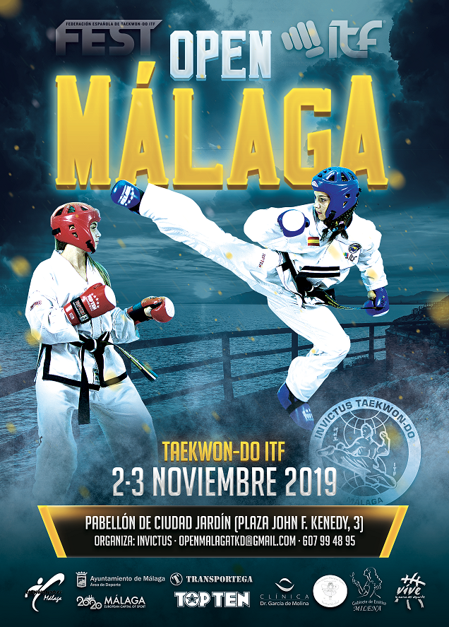
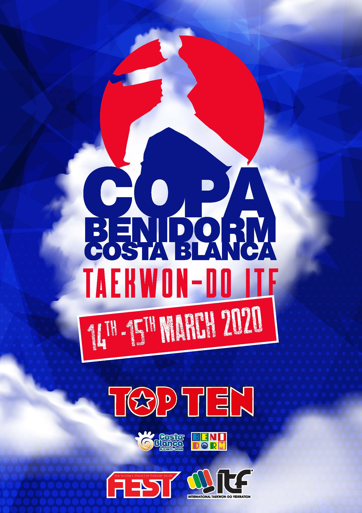
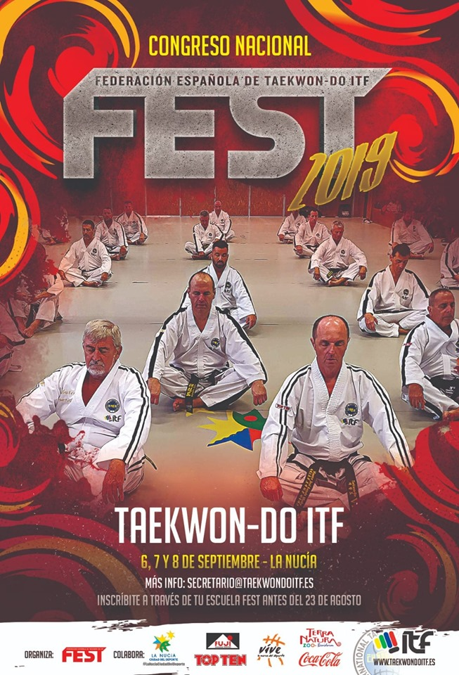

El sábado 15 de Junio de 2019 se celebró la IV Copa Ciudad de Motril, que tuvo lugar en el pabellón municipal de deportes, con la presencia de 15 escuelas de toda España, entre ellos: Barcelona, Málaga, Almería, Huelva, Granada, Marbella, Torremolinos, Benalmádena, Estepona, Calahonda, Berja, Mijas, La Mamola, Albuñol y Motril.
El evento fue un éxito total superando las expectativas en cantidad y calidad, con más de 250 competidores en las categoría infantil, junior y senior, en comparación con la III edición que asistieron 170 competidores, siendo ya un referente en el calendario de eventos de la Ciudad de Motril.
El presidente de la Asociación TKD I.T.F. Granada: Sabunim Juan Carlos Rocca VI Dan, agradece a la Concejalía de Deportes de Motril, a los patrocinadores de la Asociación: Empresa La Huerta, Fuji Mae y Top Ten, y a la Federación Española De Taekwondo-do I.T.F., y a todos los miembros de la Asociación de Granada por el gran apoyo brindado para que este evento sea un verdadero éxito.
Destacando la presencia de los Maestros: José miguel Martínez de Almería, José Carlos revelles de Barcelona y Sabunim Ana María Cáceres, miembro del Comité de Arbitraje.
Se hizo entrega de una Placa Conmemorativa a los Maestros por el apoyo brindado y en reconocimiento por su larga trayectoria.
Juan Carlos Rocca
OPEN DE MALAGA

IV OPEN DE MALAGA DE TAEKWON-DO ITF
Toda la información del OPEN de MALAGA 2019 ya esta disponible Registro abierto en ITFONLINE SPORTDATA
Open puntuable Ranking FEST
mas información
https://www.taekwondoitf.org/event/open-malaga/
Esta próxima edición muchas novedades😍👍
COPA BENIDORM 2020

XII Copa Benidorm DE TAEKWON-DO ITF
Los días 9 y 10 de Marzo se celebrará en Benidorm la XII edición del Open Internacional Copa Benidorm de Taekwondo.
CONGRESO NACIONAL DE LA FEST

El congreso nacional de la Federación Española de Taekwon-Do ITF FEST 2019 ha llegado a su fin💪🏻😃
Tres días magníficos aprendiendo y preparando nuestra nueva temporada 2019-2020, sin duda un momento magnífico para cargar las pilas y empezar la temporada de la mejor forma.
Muy contentos del trabajo realizado durante todo el congreso, de la orgànizacion e instalaciones, y de haber superado un año más nuestras previsiones.💯👌🏻🥋
Y además este año contando con la presencia especial del GM Lee Won Il.
Este éxito, sólo ha sido posible gracias al gran trabajo durante muchos meses, preparando y organizando todos los detalles, Gracias especialmente a nuestro presidente Paco Ferrando por todo su esfuerzo y empeño en que sea año tras año un éxito mayor en todos los sentidos, gracias también a nuestro secretario Vicente Ibáñez por su incansable trabajo organizativo y gran paciencia, a nuestro director técnico el Maestro José Ramon Viudes, a nuestro Coach nacional José Luis Diego, el Maestro Juan Ferrando, el Maestro Andreu Martínez, Sabunim Felix Garcia, al Sabunim Maximiliano Montiel y a todos los que de alguna forma han colaborado de alguna forma. Y por supuesto agradecer la gran participación de todas las escuelas FEST del territorio nacional, el apoyo recibido por la concejalía de deportes del ayuntamiento de la Nucia, su concejal Sergio Villalba y todo su equipo humano.
Gracias a toda la familia De Taekwon-Do ITF FEST
Ahora toca seguir trabajando y empezar a preparar el congreso nacional FEST 2020